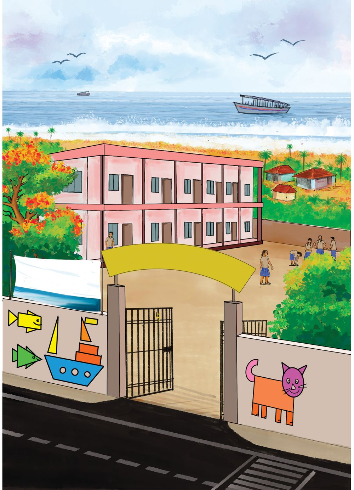
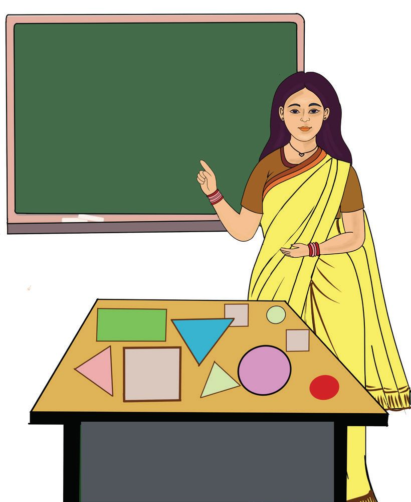
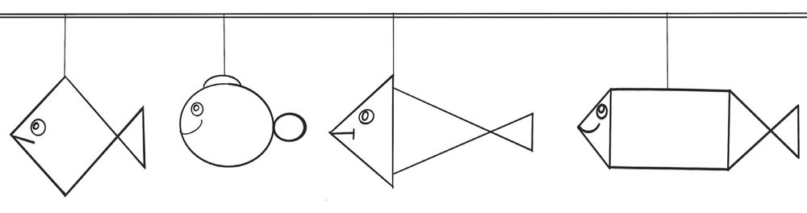
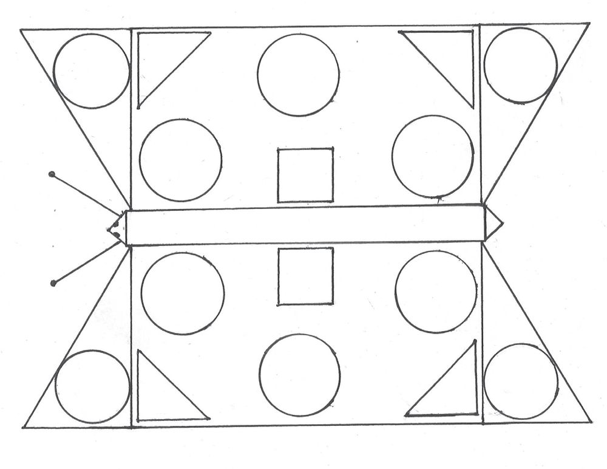
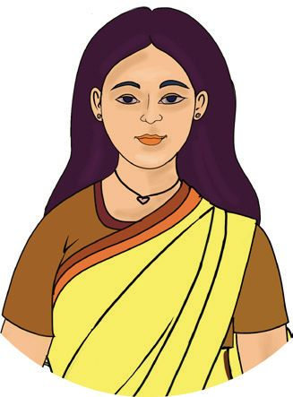
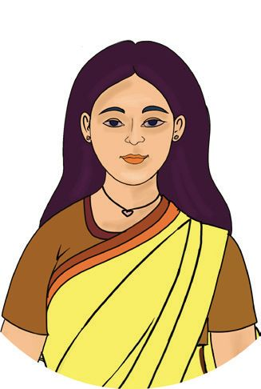
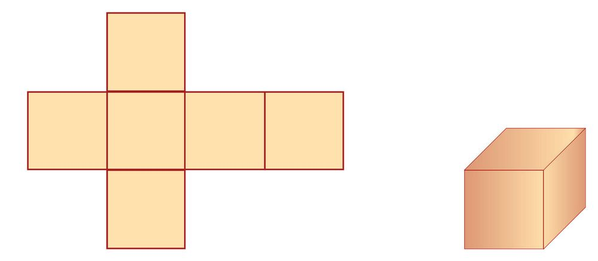
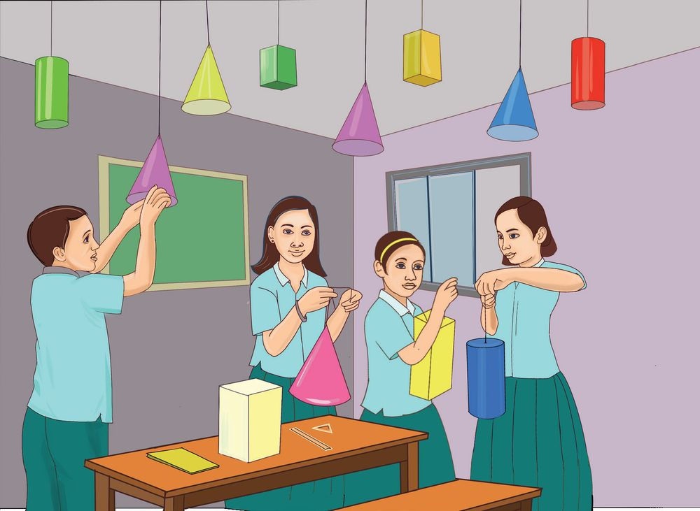
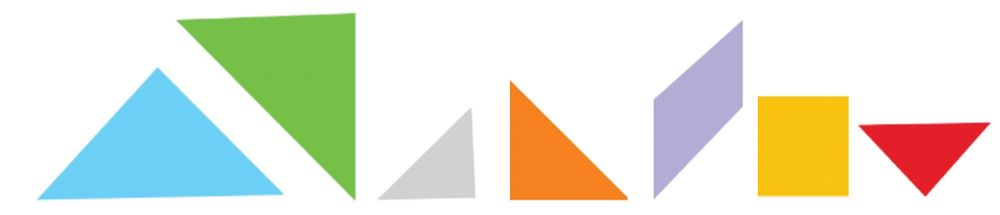

1
Lines And Shapes
Govt. L. P. School Kadalu kany
P. School Kada
June 8
All are Welco me
See the picture. What are all the things do you see? Discuss with your friends... And write in your notebook...
luk an
y
World Oceans Day
t. L . G ov

1
Lines And Shapes
Govt. L. P. School Kadalu kany
P. School Kada
June 8
All are Welco me
See the picture. What are all the things do you see? Discuss with your friends... And write in your notebook...
luk an
y
World Oceans Day
t. L . G ov


Mathematics
Standard - IV
See and Draw
My drawing
You saw the picture on the first page, didn’t you? Did you notice the pictures on the wall? Draw the picture you liked the most...
Celebration What day is celebrated on the 8th of June in Kadalukani School?
Colour The Fish There’s an exhibition in Kadalukani school as part of the World Oceans Day Celebration. Anu, Subi and Atul are making different kinds of paper fishes for decoration.
Oceans Day Celebrations
8



Lines And Shapes
See how they have hung their paper fishes using strings...
Colour these and make them pretty...
Draw and Colour Draw other shapes joining those below to make fishes. And colour them.
Shapes What all shapes did you notice in the paper fishes? Draw the shapes you know and complete the table. Shape
Name
9




Mathematics
Standard - IV
Eerkkil Fish
Make a fish using eerkkil bits
The picture shows the fish Atul made by sticking eerkkil bits on paper. Can’t you also make such figures? Use them for the Oceans Day celebrations.
Butterfly To decorate the classrooms in the school, new figures are to be drawn. See the butterfly drawn using various shapes. Colour it and make it pretty... Write the names of the shapes in the picture.
Puzzle Corner Only 3 lines are needed to make me. Who am I? 10

Lines And Shapes
Measuring Sides Use a rectangle card in the math-box to draw a rectangle My drawing
How many sides does the rectangle have ?
And corners ?
Use ruler to measure the sides of the rectangle you have drawn: Side 1
Side 2
Side 3
Side 4
.................. centimetres
.................. centimetres
.................. centimetres
.................. centimetres
Do you note anything special about these lengths? Write your findings My findings
11


Mathematics
Standard - IV
Eerkkil Rectangle See the shapes Atul and Binsa made using eerkkil bits of lengths 8 centimetres and 5 centimetres:
Atul
Binsa
Which is a rectangle? In Atul’s figure, the left and right sides go straight up The figure Binsa made is not a rectangle. Why? My findings
12


Lines And Shapes
Rectangle's Speciality Write the specialities of a rectangle: • A rectangle has four sides. • The top and bottom lines are horizontal; the left and right sides are vertical. • •
Different Rectangles See the rectangles Anoop drew using the rectangle cards in his math-box. side 4
side 2
side 1
side 3
side 3
side 2
side 4
side 1
Rectangle 1
Rectangle 2
side 4
side 2
side 1
side 1
Rectangle 3
Rectangle 4
side 3
വശംം 2
side 3
side 2
side 4
13


Mathematics
Standard - IV
Measure the sides using a ruler and write them in the table: Rectangle
Side 1 (cm)
Side 2 (cm)
Side 3 (cm)
Side 4 (cm)
1 2 3 4
What is the specialty of measurements ? My findings
Special Rectangle We have seen different rectangles. Look at the third and fourth rectangles again.
Puzzle Corner
Take eerkkil bits to make such a rectangle
How many corners?
One corner of a rectangular sheet of paper is cut off. How many corners does it have now?
What is special about the lengths of the eerkkil bits you took? 14


Lines And Shapes
Write down the peculiarities of a square My findings
• There are 4 sides • • •
Square A rectangle with all four sides of the same length is called a square.
All squares are rectangles; but all rectangles are not squares.
Square within Rectangle Draw a single line inside this rectangle to draw a square.
Making A Cube Draw squares as shown below in a thick sheet of paper and cut it. With teacher’s help, make a cube as shown:
15


Mathematics
Standard - IV
Geoboard Make rectangles and squares using rubber bands on the geoboard in the Math Lab. Find the lengths of sides. What figure is got by looping a rubber band around a peg and three pegs nearest to it?
Math Club See how they have decorated the classroom for the Math Club inauguration...
16



Lines And Shapes
What all shapes are there among them? The picture below shows some of these shapes. Write the name of each under it.
Let’s Find Out! Classify various familiar objects seen around you, according to their shapes. Write the names of these objects also. Rectangular block
Sphere
Cube
Cone
Tangram The cover page of the textbook shown various figures formed using the shapes shown below. Make new figures using these pieces of the tangram.
17


Mathematics
Standard - IV
1. Tick () the rectangles in the figures below. Colour the square
with red.
2.
Manu is making a greeting card. He pasted coloured string along all four sides of a square of sides 8 centimetres. What is the total length of the string he used?
3. Draw a rectangle in the notebook using a rectangle card.
Draw squares on both the shorter and longer sides, using a ruler. Measure their sides and write them down.
4. The lengths of the sides of some figures are given below. Which of them can be used to draw a rectangle? A) 5, 8, 6, 7
B) 5, 6, 7, 9
C) 5, 8, 5, 8 D) 8, 8, 5, 8
5. Which of the lengths below cannot be used to draw a square? (A) Length of each side 8
(B) 5, 5, 5, 5
(C) All four sides 6
D) 5, 5, 6, 6
6. Which is the next picture ?
(A)
18
(B)
(C)
(D)